TMP-0460E5374573
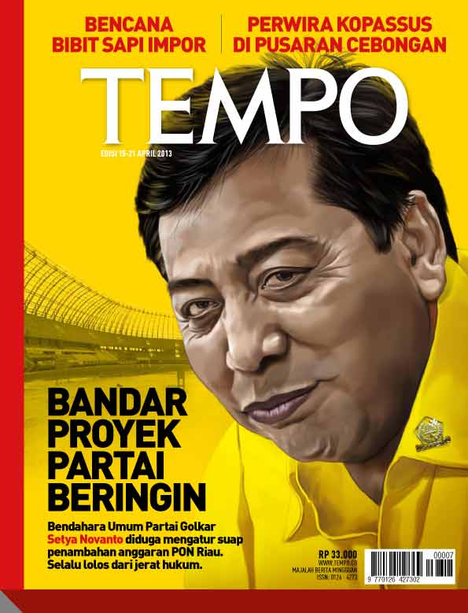
BANDAR PROYEK PARTAI BERINGIN
Bendahara Umum Partai Golkar Setya Novanto diduga mengatur suap penambahan anggaran PON Riau. Selalu lolos dari jerat hukum. Bencana Bibit Sapi Impor, Perwira Kopassus di Pusaran Cebongan
Isi annotator_B.csv setelah membaca codebook. Tiga kolom task, keyakinan dan komentar masih kosong. Penilaian harus independen.

BANDAR PROYEK PARTAI BERINGIN
Bendahara Umum Partai Golkar Setya Novanto diduga mengatur suap penambahan anggaran PON Riau. Selalu lolos dari jerat hukum. Bencana Bibit Sapi Impor, Perwira Kopassus di Pusaran Cebongan

Ernest Douwes Dekker: Inspirasi bagi Revolusi Indonesia
Edisi Khusus Hari Kemerdekaan.
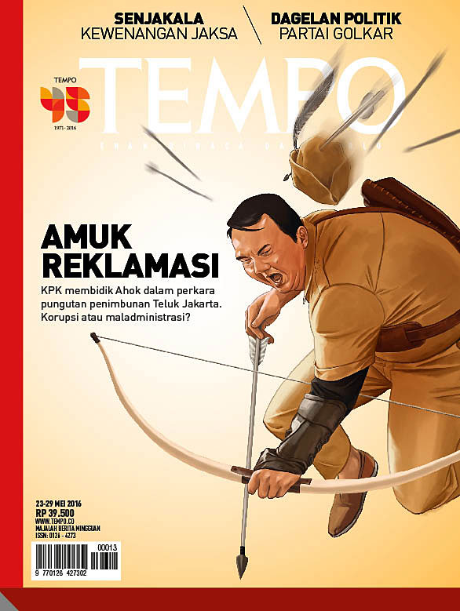
Amuk Reklamasi
Senjakala Kewenangan Jaksa; Dagelan Politik Partai Golkar. KPK membidik Ahok dalam perkara pungutan penimbunan Teluk Jakarta. Korupsi atau maladministrasi?
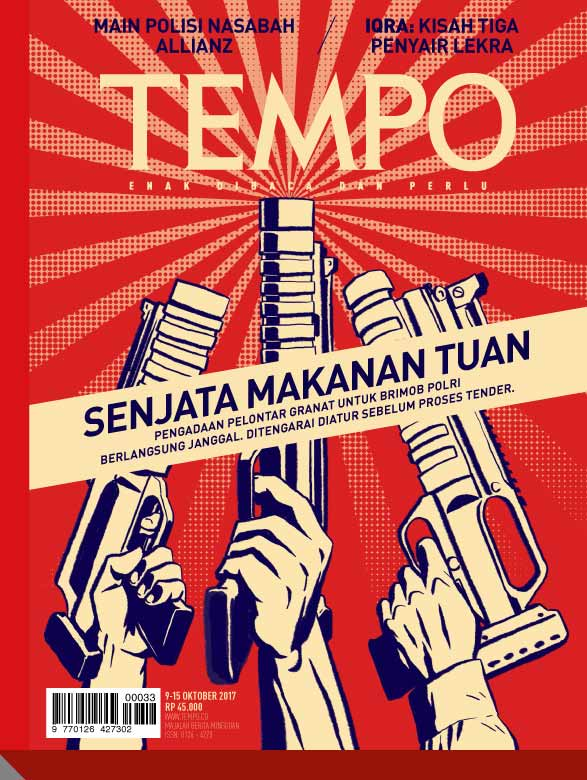
Senjata Makanan Tuan
Pengadaan pelontar granat untuk Brimob Polri berlangsung janggal. Ditengarai diatur sebelum proses tender. Main Polisi Nasabah Allianz; Iqra: Kisah Tiga Penyair Lekra.
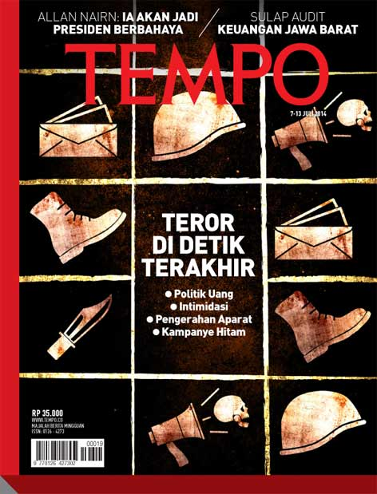
TEROR DI DETIK TERAKHIR
Politik Uang, Intimidasi, Pengerahan Aparat, Kampanye Hitam. Allan Nairn: Ia Akan Jadi Presiden Berbahaya, Sulap Audit Keuangan Jawa Barat
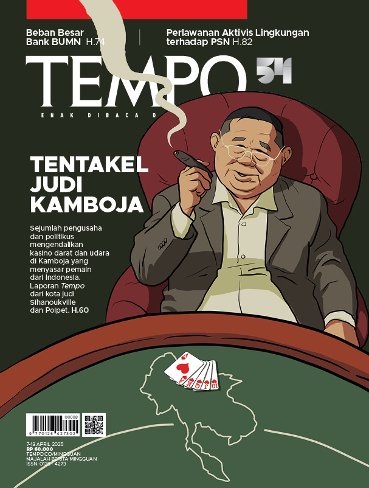
Tentakel Judi Kamboja
Sejumlah pengusaha dan politikus mengendalikan kasino darat dan udara di Kamboja yang menyasar pemain dari Indonesia. Laporan Tempo dari kota judi Sihanoukville dan Poipet. Beban Besar Bank BUMN; Perlawanan Aktivis Lingkungan terhadap PSN.
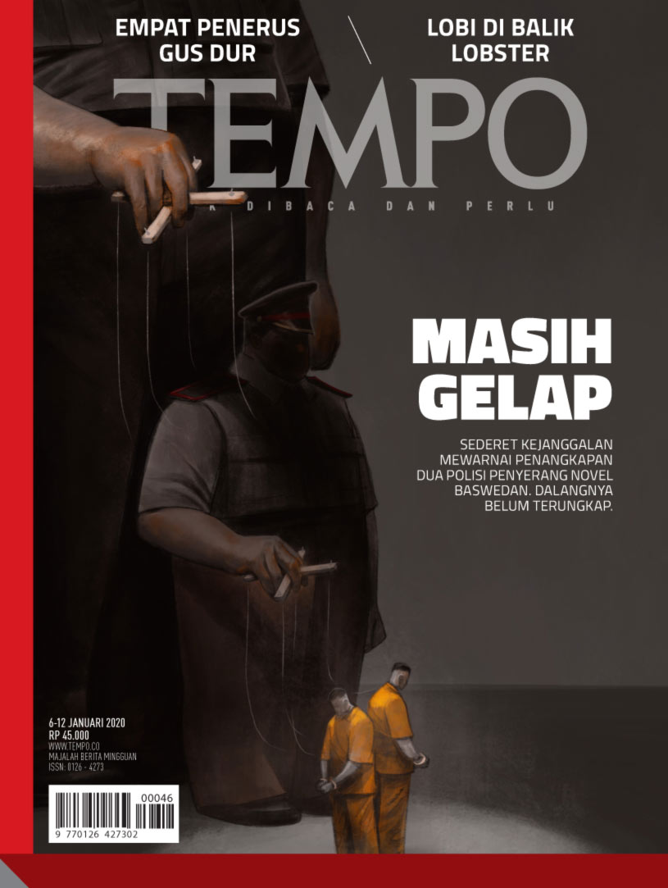
Masih Gelap
Empat Penerus Gus Dur; Lobi di Balik Lobster. Sederet kejanggalan mewarnai penangkapan dua polisi penyerang Novel Baswedan. Dalangnya belum terungkap.
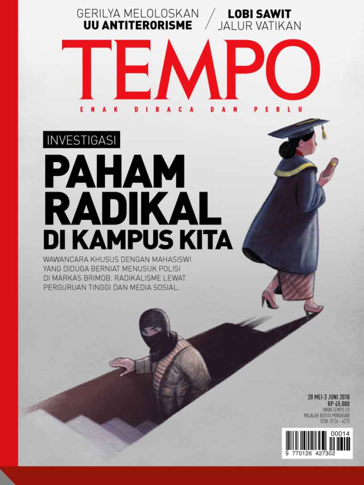
Paham Radikal di Kampus Kita
Investigasi. Gerilya Meloloskan UU Antiterorisme; Lobi Sawit Jalur Vatikan. Wawancara khusus dengan mahasiswi yang diduga berniat menusuk polisi di Markas Brimob. Radikalisme lewat perguruan tinggi dan media sosial.
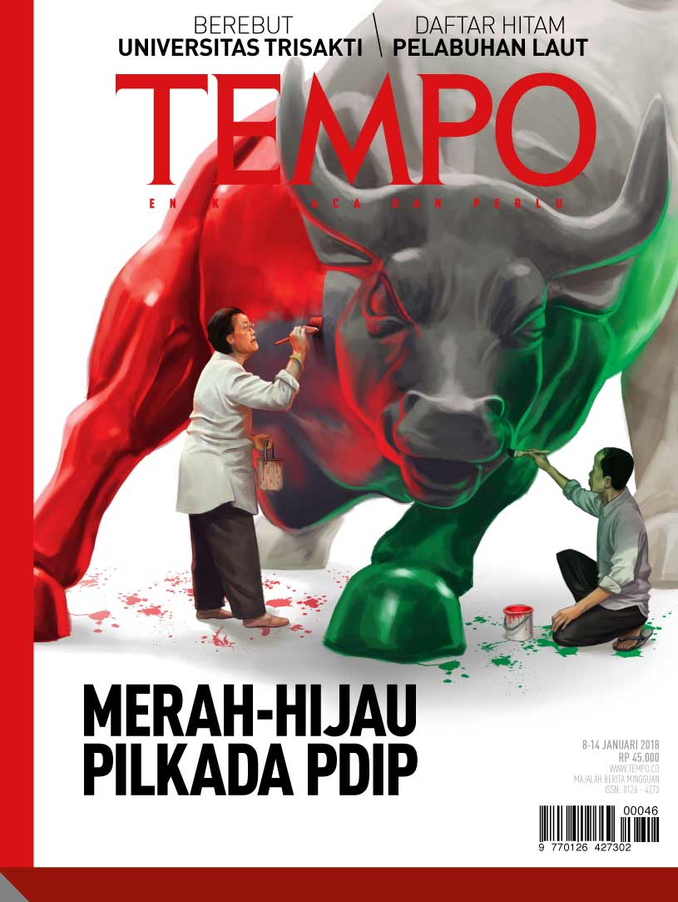
MERAH-HIJAU PILKADA PDIP
Berebut Universitas Trisakti, Daftar Hitam Pelabuhan Laut
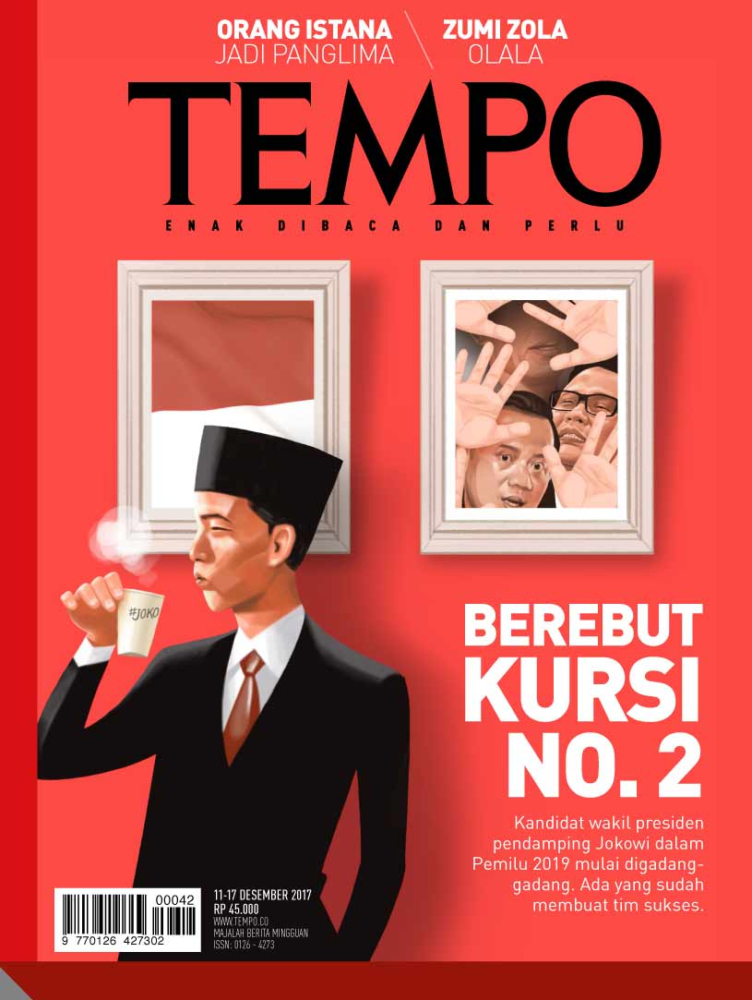
Berebut Kursi No. 2
Orang Istana Jadi Panglima; Zumi Zola Olala. Kandidat wakil presiden pendamping Jokowi dalam Pemilu 2019 mulai digadang-gadang. Ada yang sudah membuat tim sukses.
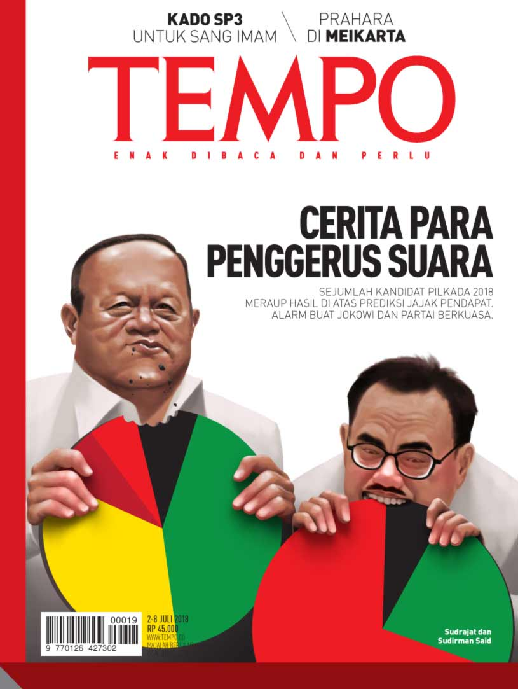
Cerita Para Penggerus Suara
Kado SP3 untuk Sang Imam; Prahara di Meikarta. Sejumlah kandidat pilkada 2018 meraup hasil di atas prediksi jajak pendapat.
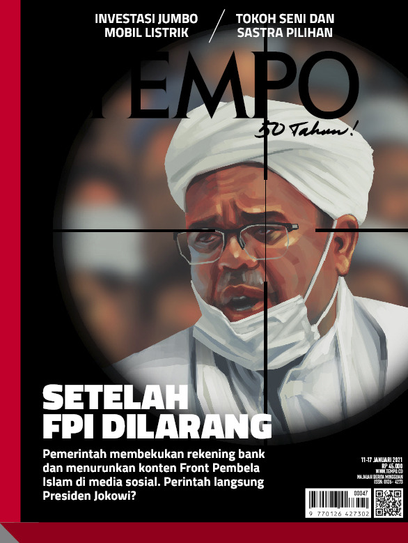
Setelah FPI Dilarang
Investasi Jumbo Mobil Listrik; Tokoh Seni dan Sastra Pilihan. Pemerintah membekukan rekening bank dan menurunkan konten Front Pembela Islam di media sosial. Perintah langsung Presiden Jokowi?
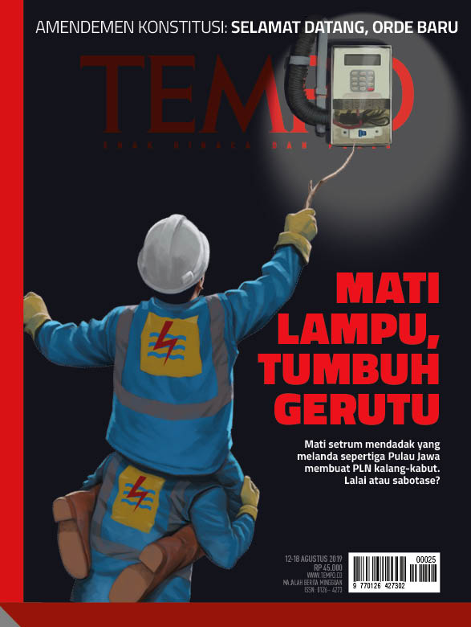
Mati Lampu, Tumbuh Gerutu
Mati setrum mendadak yang melanda sepertiga Pulau Jawa membuat PLN kalang-kabut. Lalai atau sabotase? Amendemen Konstitusi: Selamat Datang, Orde Baru.
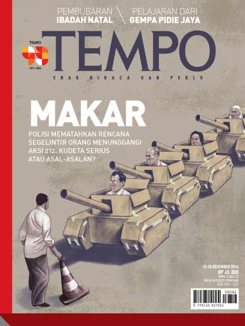
Makar
Polisi mematahkan rencana segelintir orang menunggangi Aksi 212. Kudeta serius atau asal-asalan? Pembubaran Ibadah Natal; Pelajaran dari Gempa Pidie Jaya.
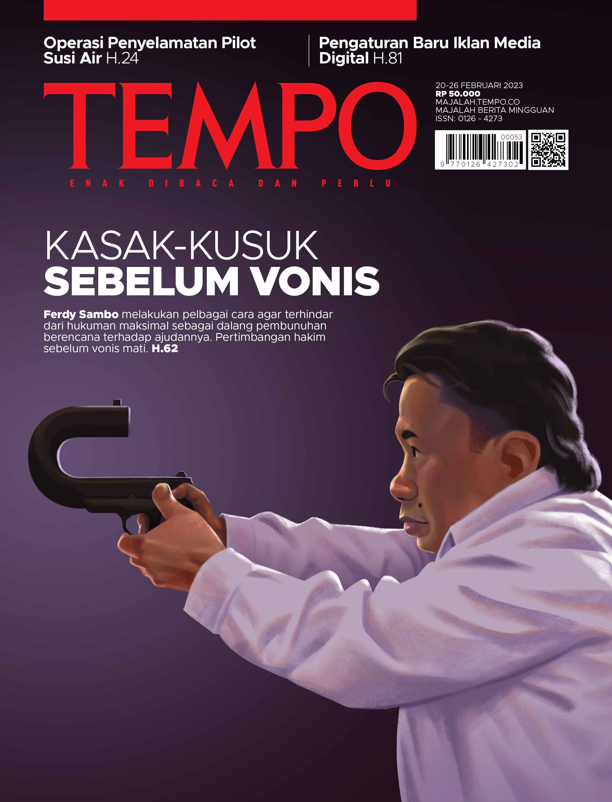
Kasak-Kusuk Sebelum Vonis
Ferdy Sambo melakukan pelbagai cara agar terhindar dari hukuman maksimal sebagai dalang pembunuhan berencana terhadap ajudannya. Pertimbangan hakim sebelum vonis mati. Operasi Penyelamatan Pilot Susi Air; Pengaturan Baru Iklan Media Digital.
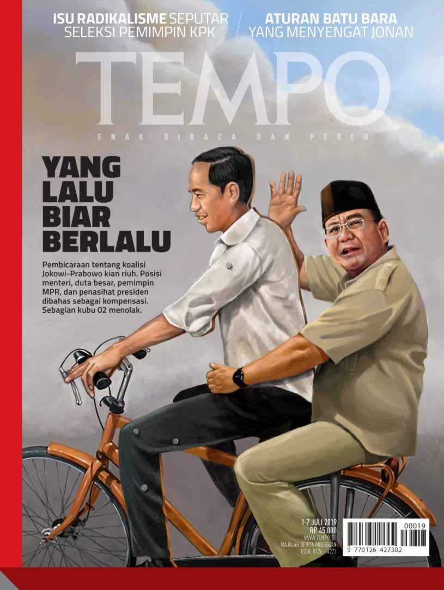
YANG LALU BIAR BERLALU
Pembicaraan tentang koalisi Jokowi-Prabowo kian riuh. Posisi menteri, duta besar, pemimpin MPR, dan penasihat presiden dibahas sebagai kompensasi. Sebagian kubu 02 menolak. Isu Radikalisme seputar Seleksi Pemimpin KPK, Aturan Batu Bara yang Menyengat Jonan

Sat-Set Menghalau Angket
Partai pendukung Anies Baswedan dan Ganjar Pranowo tak solid mendorong hak angket kecurangan pemilu di DPR. Tergiur iming-iming kursi menteri. Di Balik Tuduhan Perdagangan Orang Ferienjob; Para Bohir Pasir di Laut.
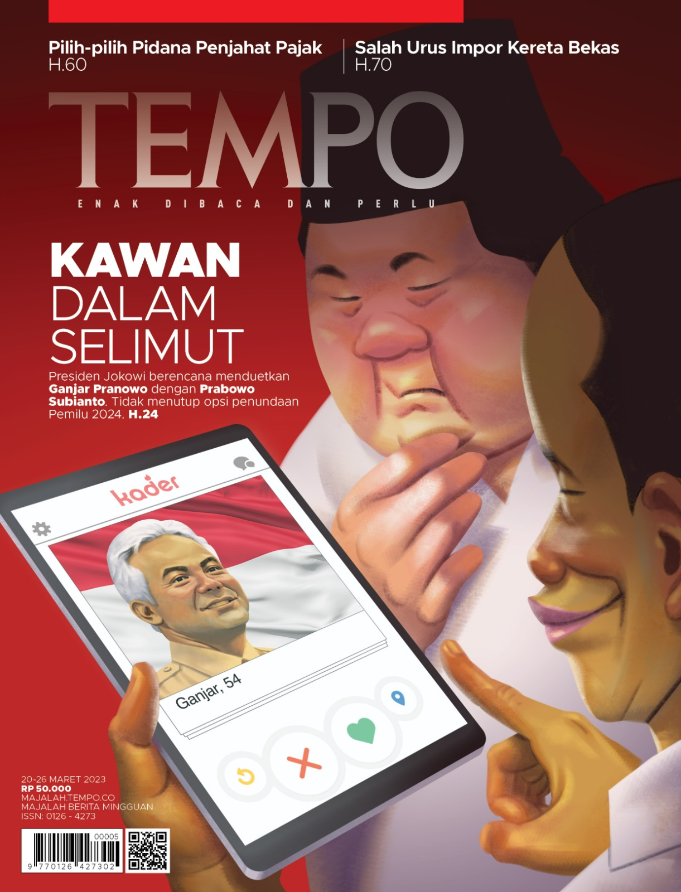
Kawan dalam Selimut
Presiden Jokowi berencana menduetkan Ganjar Pranowo dengan Prabowo Subianto. Tidak menutup opsi penundaan Pemilu 2024. Pilih-pilih Pidana Penjahat Pajak; Salah Urus Impor Kereta Bekas.
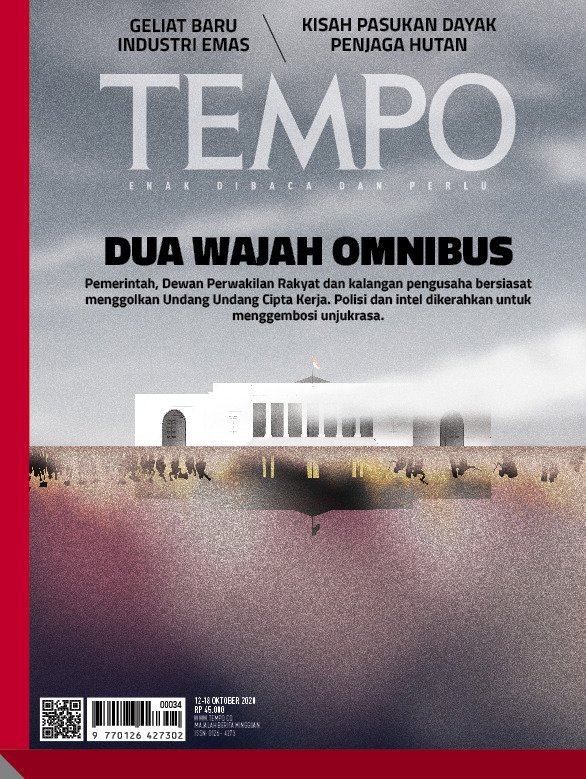
DUA WAJAH OMNIBUS
Pemerintah, Dewan Perwakilan Rakyat dan kalangan pengusaha bersiasat menggolkan Undang-Undang Cipta Kerja. Polisi dan intel dikerahkan untuk menggembosi unjuk rasa. Geliat Baru Industri Emas, Kisah Pasukan Dayak Penjaga Hutan
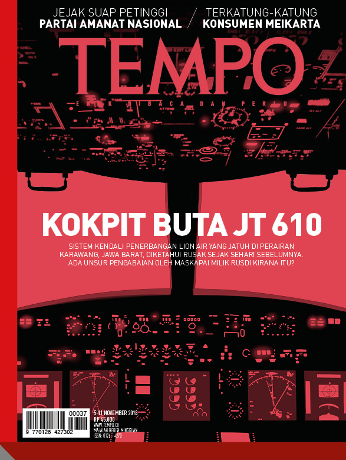
KOKPIT BUTA JT 610
Sistem kendali penerbangan Lion Air yang jatuh di perairan Karawang, Jawa Barat, diketahui rusak sejak sebelumnya. Ada unsur pengabaian oleh maskapai milik Rusdi Kirana itu?
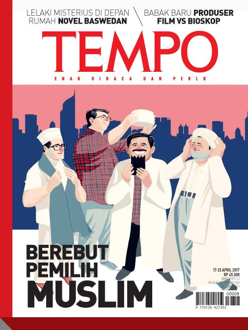
Berebut Pemilih Muslim
Lelaki Misterius di Depan Rumah Novel Baswedan; Babak Baru Produser Film vs Bioskop.
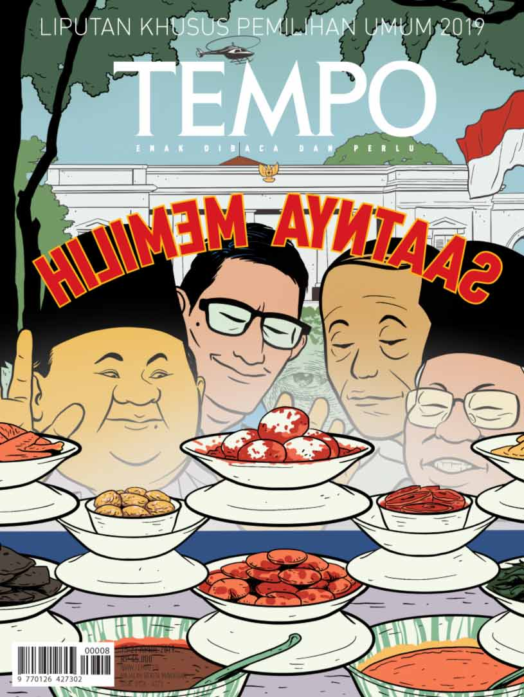
Saatnya Memilih
Liputan Khusus Pemilihan Umum 2019.
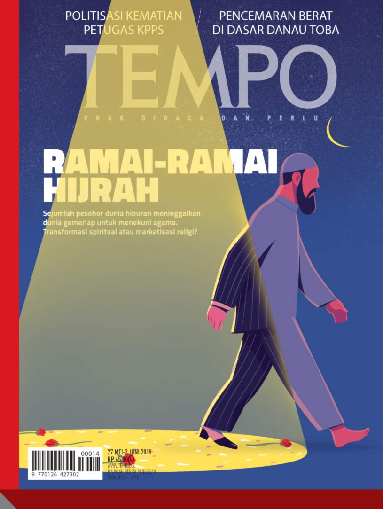
Ramai-Ramai Hijrah
Sejumlah pesohor dunia hiburan meninggalkan dunia gemerlap untuk menekuni agama. Transformasi spiritual atau marketisasi religi? Politisasi Kematian Petugas KPPS; Pencemaran Berat di Dasar Danau Toba.
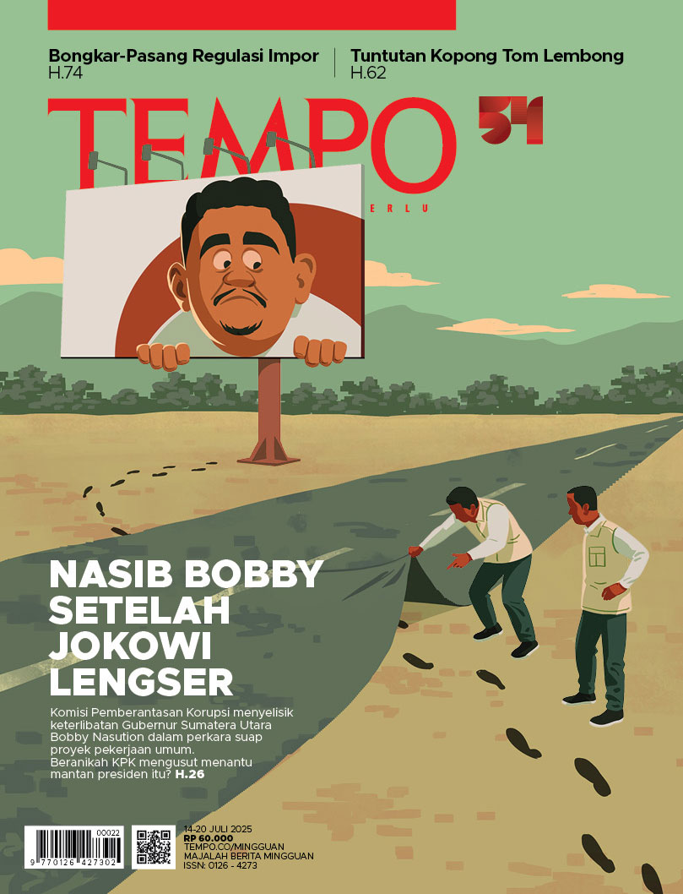
NASIB BOBBY SETELAH JOKOWI LENGSER
Komisi Pemberantasan Korupsi menyelisik keterlibatan Gubernur Sumatera Utara Bobby Nasution dalam perkara suap proyek pekerjaan umum. Beranikah KPK mengusut menantu mantan presiden itu? Bongkar-Pasang Regulasi Impor, Tuntutan Kopong Tom Lembong
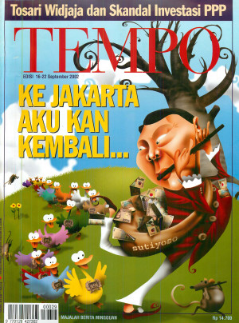
Ke Jakarta Aku Kan Kembali...
Tosari Widjaja dan Skandal Investasi PPP.
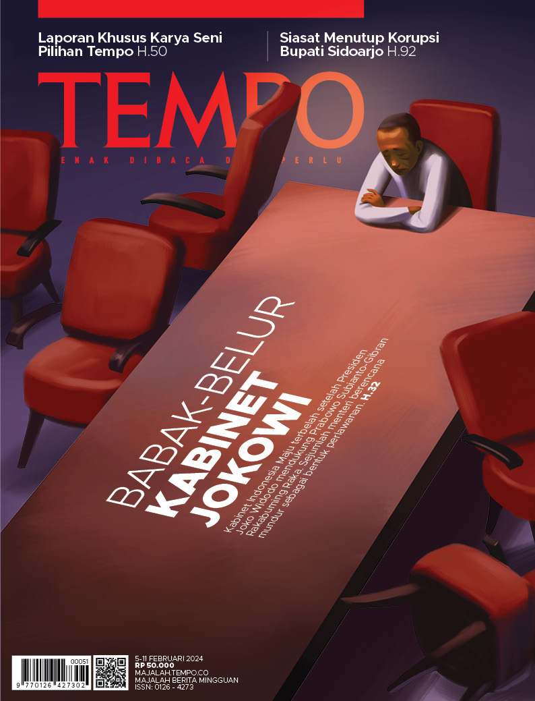
Babak-Belur Kabinet Jokowi
Laporan Khusus Karya Seni Pilihan Tempo; Siasat Menutup Korupsi Bupati Sidoarjo. Kabinet Indonesia Maju terbelah setelah Presiden mendukung Prabowo Subianto-Gibran Rakabuming Raka bertarung dengan menteri. Sejumlah bentuk perlawanan mundur.
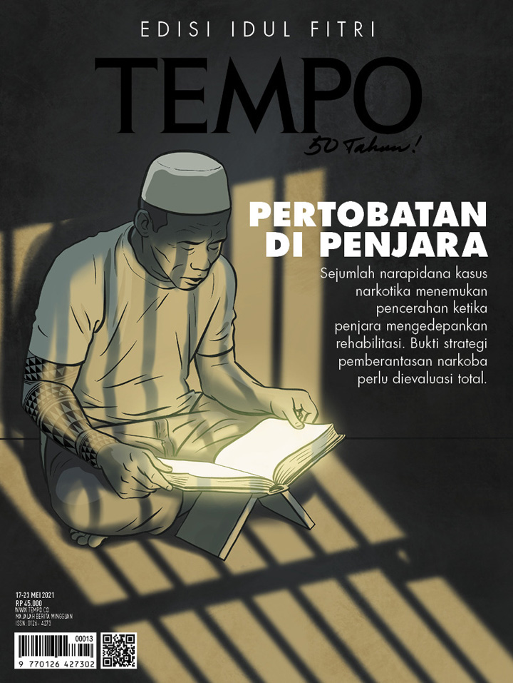
Pertobatan di Penjara
Edisi Idul Fitri. Sejumlah narapidana kasus narkotika menemukan pencerahan ketika penjara mengedepankan rehabilitasi. Bukti strategi pemberantasan narkoba perlu dievaluasi total.
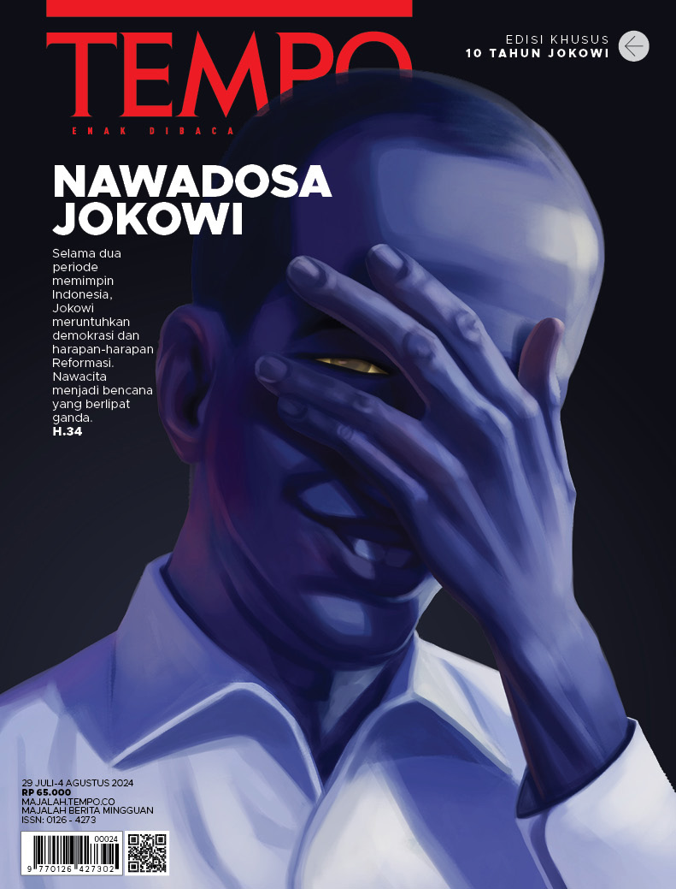
Nawadosa Jokowi
Edisi Khusus 10 Tahun Jokowi. Selama dua periode memimpin Indonesia, Jokowi meruntuhkan demokrasi dan harapan-harapan Reformasi. Nawacita menjadi bencana yang berlipat ganda.
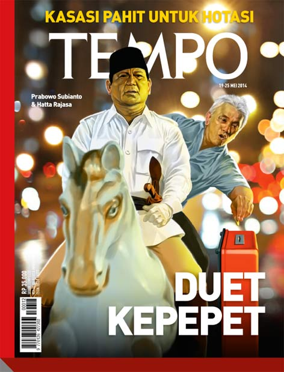
DUET KEPEPET
Kasasi Pahit untuk Hotasi. Prabowo Subianto & Hatta Rajasa
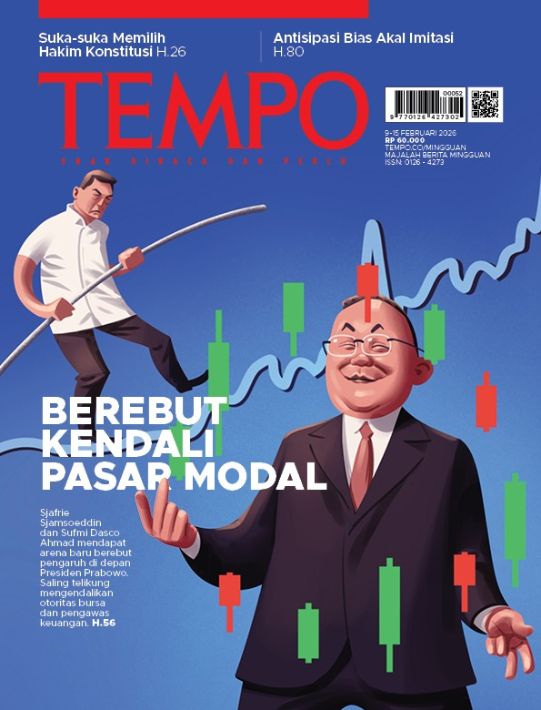
BEREBUT KENDALI PASAR MODAL
Sjafrie Sjamsoeddin dan Sufmi Dasco Ahmad mendapat arena baru berebut pengaruh di depan Presiden Prabowo. Saling telikung mengendalikan otoritas bursa dan pengawas keuangan. Suka-suka Memilih Hakim Konstitusi, Antisipasi Bias Akal Imitasi

Super Napi, Super Nazar
Bahkan dari dalam penjara ia masih mengendalikan 'bisnis'-nya. Calo dan Kisruh TKI Jeddah.
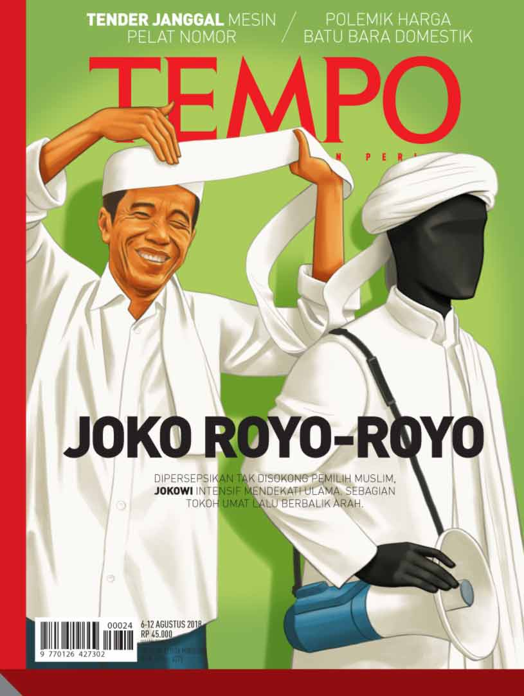
JOKO ROYO-ROYO
Dipersepsikan tak disokong pemilih muslim, Jokowi intensif mendekati ulama. Sebagian tokoh umat lalu berbalik arah. Tender Janggal Mesin Pelat Nomor, Polemik Harga Batu Bara Domestik
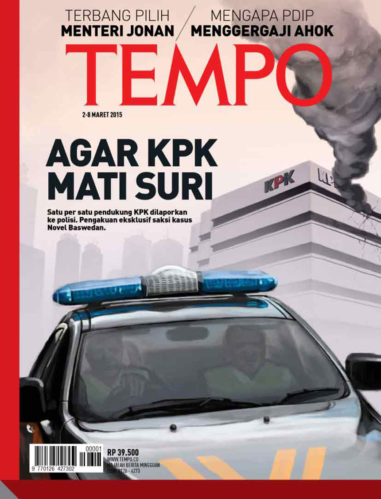
AGAR KPK MATI SURI
Satu per satu pendukung KPK dilaporkan ke polisi. Pengakuan eksklusif saksi kasus Novel Baswedan.
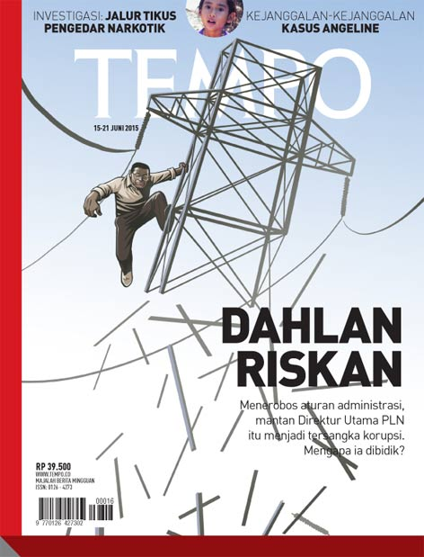
Dahlan Riskan
Menerobos aturan administrasi, mantan Direktur Utama PLN itu menjadi tersangka korupsi. Investigasi: Jalur Tikus Pengedar Narkotik; Kejanggalan-Kejanggalan Kasus Angeline.
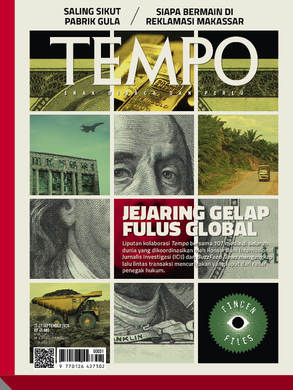
Jejaring Gelap Fulus Global
Liputan kolaborasi Tempo bersama 107 media di seluruh dunia yang dikoordinasikan oleh Konsorsium Internasional Jurnalis Investigasi (ICIJ) dan BuzzFeed News mengungkap lalu lintas transaksi mencurigakan yang luput dari radar penegak hukum. Saling Sikut Pabrik Gula; Siapa Bermain di Reklamasi Makassar.
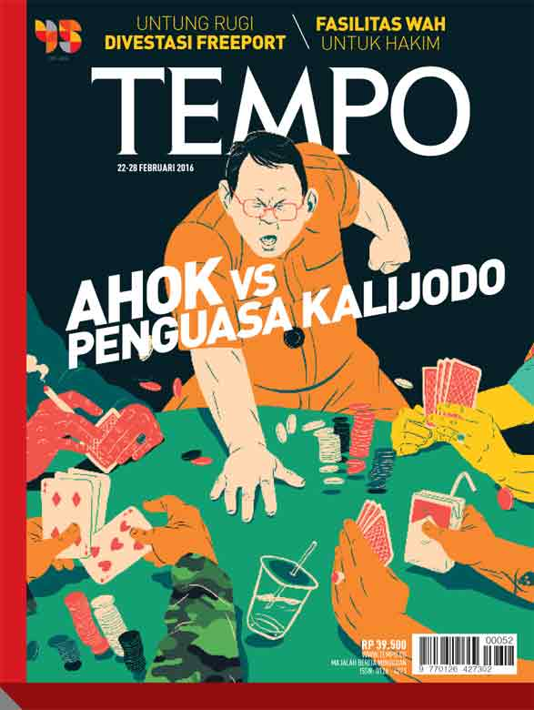
AHOK VS PENGUASA KALIJODO
Untung Rugi Divestasi Freeport, Fasilitas Wah untuk Hakim
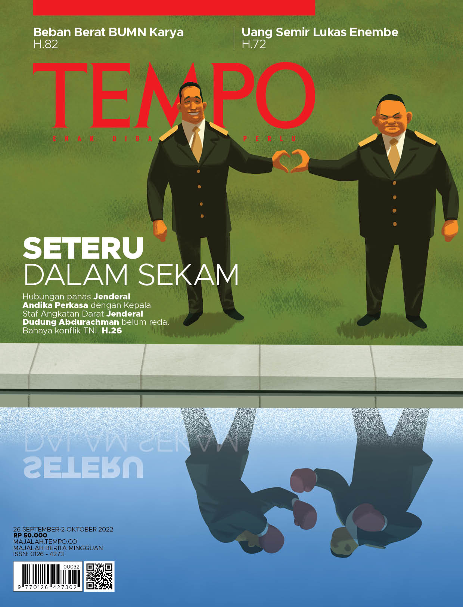
SETERU DALAM SEKAM
Hubungan panas Jenderal Andika Perkasa dengan Kepala Staf Angkatan Darat Jenderal Dudung Abdurachman belum reda. Bahaya konflik TNI. Beban Berat BUMN Karya, Uang Semir Lukas Enembe
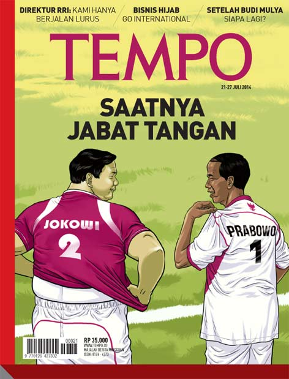
Saatnya Jabat Tangan
Direktur RRI: Kami Hanya Berjalan Lurus; Bisnis Hijab Go International; Setelah Budi Mulya, Siapa Lagi?
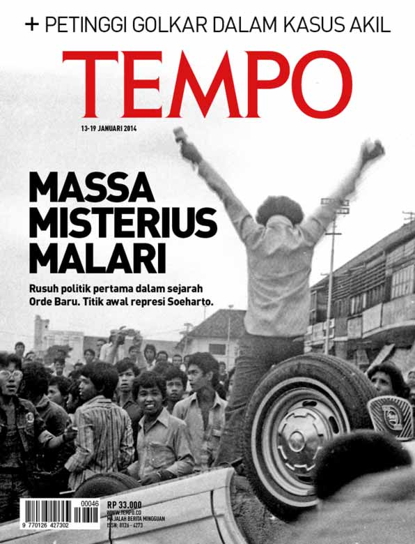
Massa Misterius Malari
Petinggi Golkar dalam Kasus Akil. Rusuh politik pertama dalam sejarah Orde Baru. Titik awal represi Soeharto.
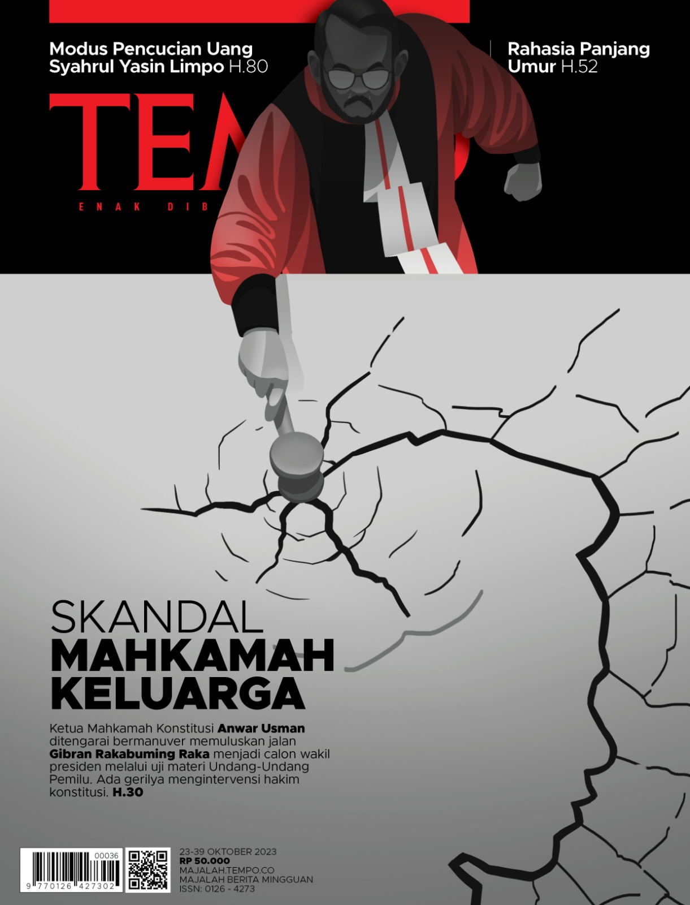
Skandal Mahkamah Keluarga
Ketua Mahkamah Konstitusi Anwar Usman ditengarai bermanuver memuluskan jalan Gibran Rakabuming Raka menjadi calon wakil presiden melalui uji materi Undang-Undang Pemilu. Ada gerilya mengintervensi hakim konstitusi. Modus Pencucian Uang Syahrul Yasin Limpo; Rahasia Panjang Umur.

Dua Tahun Genosida Palestina
Serangan Israel tak hanya membunuh puluhan ribu penduduk Gaza, tapi juga menciptakan bencana kelaparan. Laporan koresponden Tempo langsung dari medan perang. Wawancara Eksklusif Francesca Albanese; Zat Radioaktif di Produk Udang Kita.
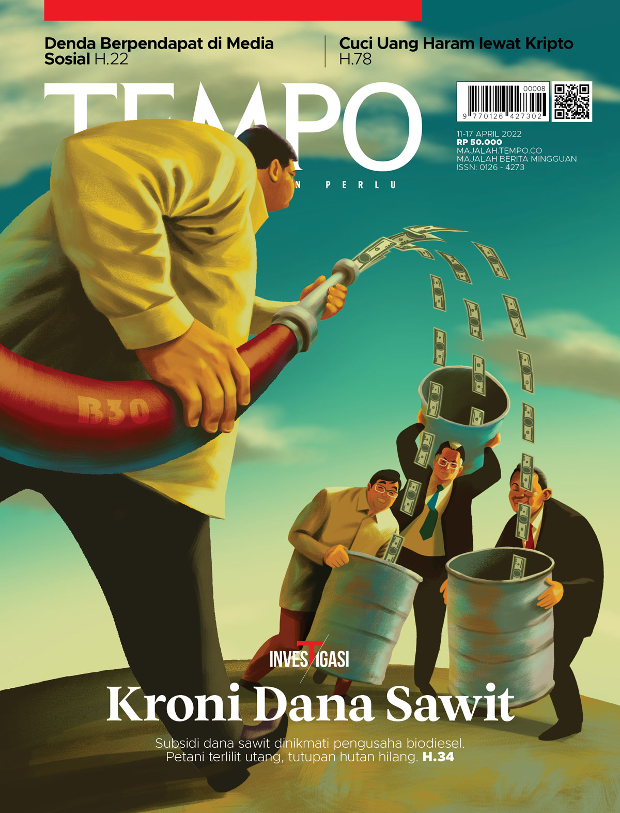
Kroni Dana Sawit
Investigasi. Denda Berpendapat di Media Sosial; Cuci Uang Haram lewat Kripto. Subsidi dana sawit dinikmati pengusaha biodiesel. Petani terlilit utang, tutupan hutan hilang.
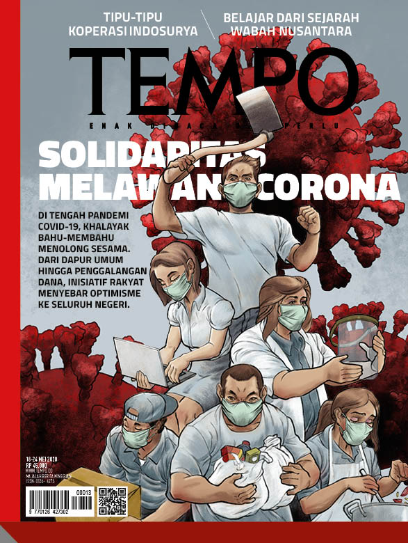
Solidaritas Melawan Corona
Di tengah pandemi Covid-19, khalayak bahu-membahu menolong sesama. Dari dapur umum hingga penggalangan dana, inisiatif rakyat menyebar optimisme ke seluruh negeri. Tipu-tipu Koperasi Indosurya; Belajar dari Sejarah Wabah Nusantara.
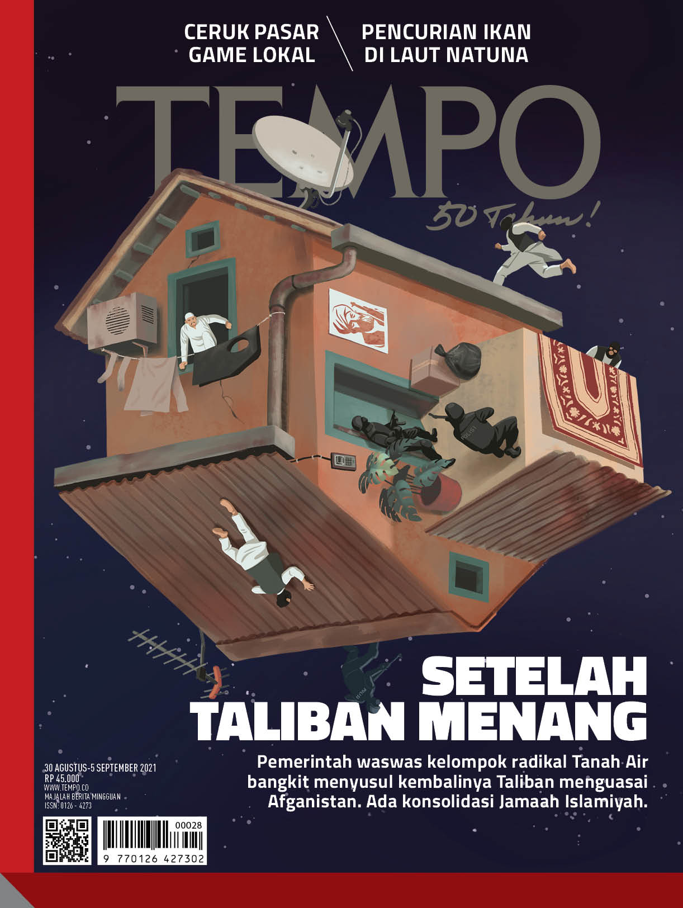
SETELAH TALIBAN MENANG
Pemerintah waswas kelompok radikal Tanah Air bangkit menyusul kembalinya Taliban menguasai Afganistan. Ada konsolidasi Jamaah Islamiyah. Ceruk Pasar Game Lokal, Pencurian Ikan di Laut Natuna
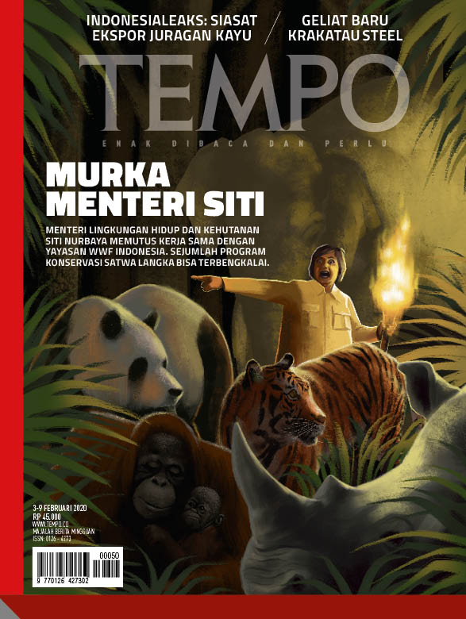
Murka Menteri Siti
Menteri Lingkungan Hidup dan Kehutanan Siti Nurbaya memutus kerja sama dengan Yayasan WWF Indonesia. Sejumlah program konservasi satwa langka bisa terbengkalai. IndonesiaLeaks: Siasat Ekspor Juragan Kayu; Geliat Baru Krakatau Steel.
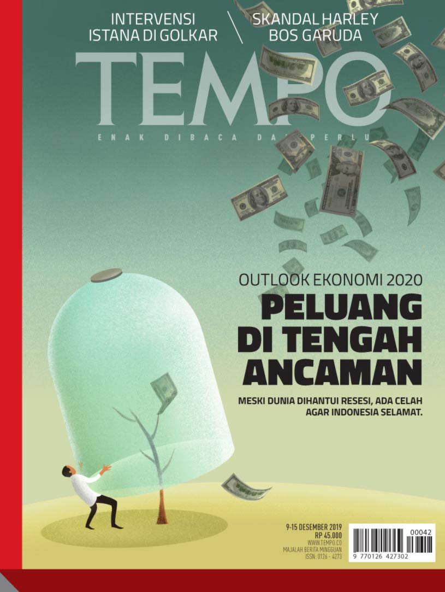
Peluang di Tengah Ancaman
Outlook Ekonomi 2020. Meski dunia dihantui resesi, ada celah agar Indonesia selamat. Intervensi Istana di Golkar; Skandal Harley Bos Garuda.
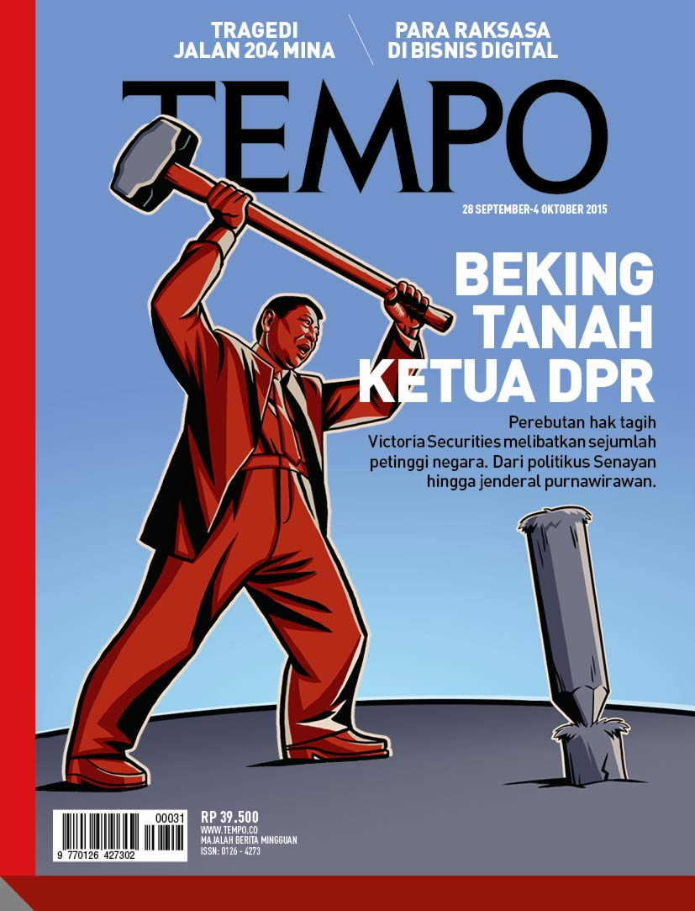
Beking Tanah Ketua DPR
Perebutan hak tagih Victoria Securities melibatkan sejumlah petinggi negara. Dari politikus Senayan hingga jenderal purnawirawan. Tragedi Jalan 204 Mina; Para Raksasa di Bisnis Digital.
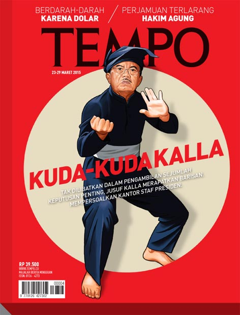
KUDA-KUDA KALLA
Tak dilibatkan dalam pengambilan sejumlah keputusan penting, Jusuf Kalla merapatkan barisan. Mempersoalkan Kantor Staf Presiden. Berdarah-darah karena Dolar, Perjamuan Terlarang Hakim Agung
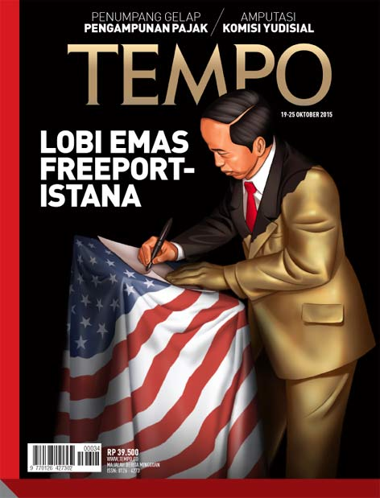
Lobi Emas Freeport-Istana
Penumpang Gelap Pengampunan Pajak; Amputasi Komisi Yudisial.
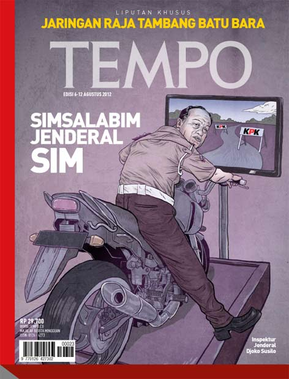
SIMSALABIM JENDERAL SIM
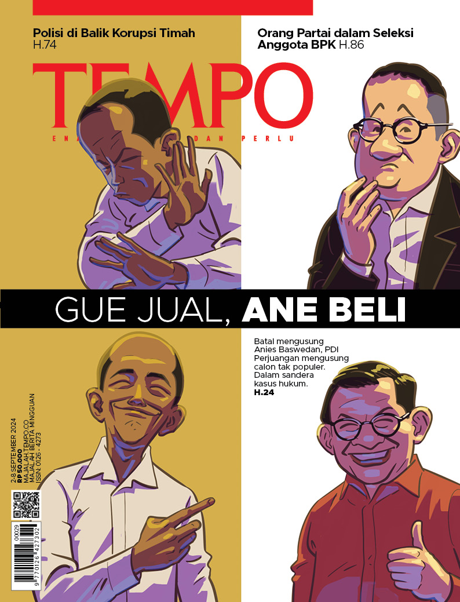
Gue Jual, Ane Beli
Polisi di Balik Korupsi Timah; Orang Partai dalam Seleksi Anggota BPK. Batal mengusung Anies Baswedan, PDI Perjuangan mengusung calon tak populer. Dalam sandera kasus hukum.
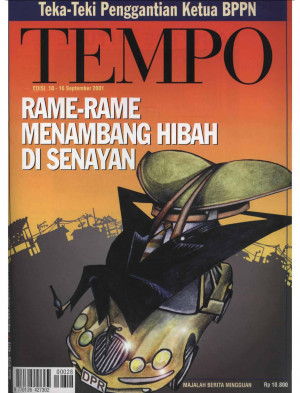
RAME-RAME MENAMBANG HIBAH DI SENAYAN
Teka-Teki Penggantian Ketua BPPN
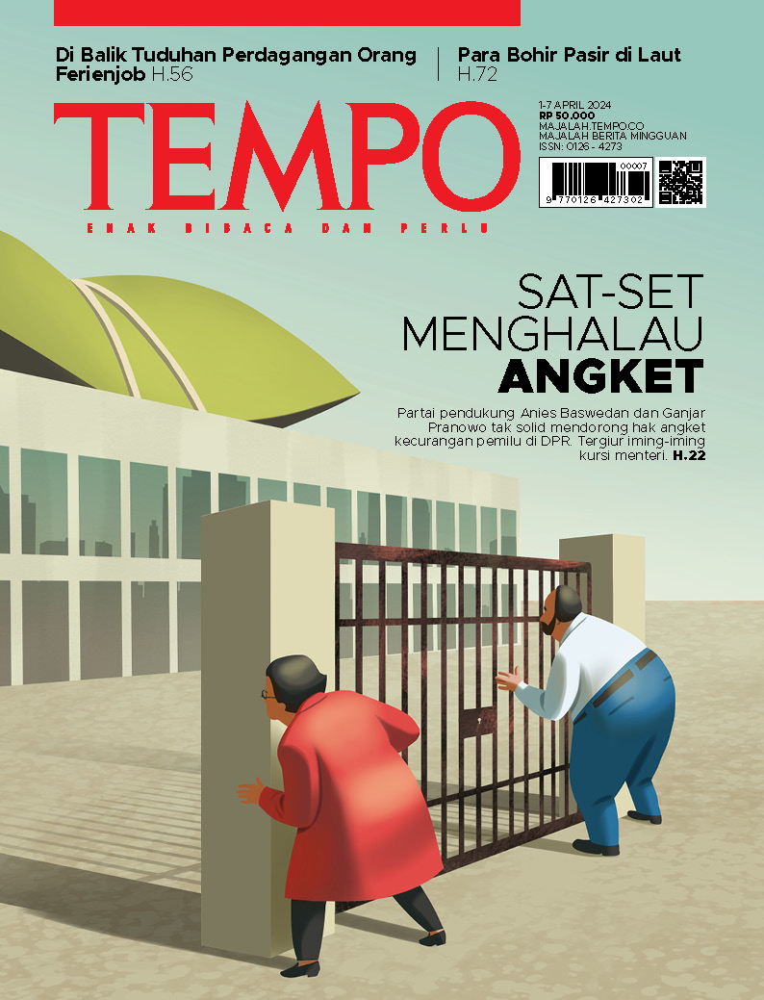
Gerilya untuk Putra Mahkota
Peluang Gibran Rakabuming Raka makin kuat menjadi kandidat wakil presiden mendampingi Prabowo Subianto. Campur tangan Presiden Jokowi. Salah Kaprah Keadilan Restoratif; Remuk Redam Keuangan Indofarma Setelah Pandemi.
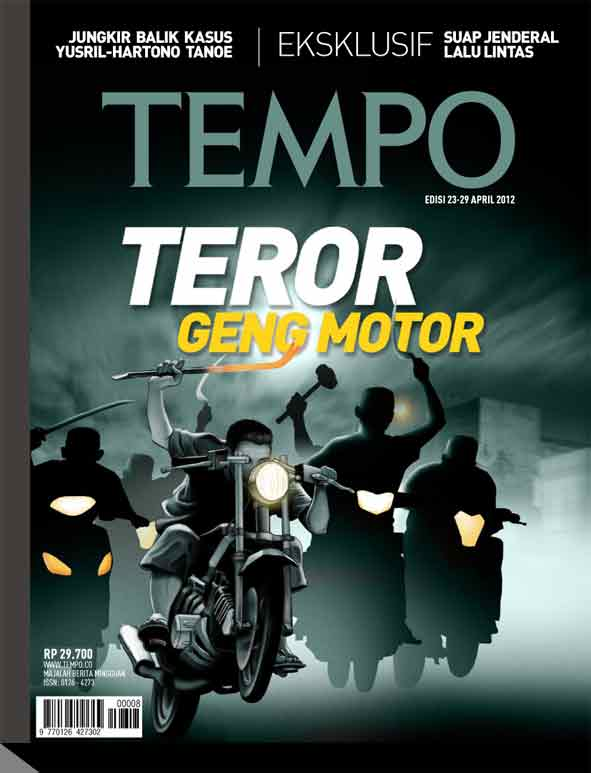
Teror Geng Motor
Jungkir Balik Kasus Yusril-Hartono Tanoe; Eksklusif Suap Jenderal Lalu Lintas.
Pencuri Tamu Tuhan
Permainan anggota DPR terungkap dalam pengusutan dugaan korupsi-haji Suryadharma Ali. Selingan: Buku-buku yang Telantar; Penumpang Gelap Paket Kebijakan.
Bukan Bupati Biasa
Edisi Khusus Kepala Daerah Pilihan 2012.
Ormas Paramiliter: Politik, Bisnis, Kekerasan
Konflik antar-organisasi kemasyarakatan yang ditengarai terjadi karena perebutan lahan kembali meningkat. Mengapa mereka makin kuat? Perempuan Adat yang Melawan; Vaksin Ketiga untuk Apa.
YANG CUAN DARI WABAH PMK
Kementerian Pertanian lalai menangkis wabah penyakit mulut dan kuku ternak ruminansia. Sementara peternak kecil merugi, importir daging dan pengusaha vaksin untung besar. Regulasi Buruk Komunikasi Elektronik, Di Ambang Resesi Ekonomi
Siapa Beking Asian Agri
Konvensi Demokrat Lesu Darah. Giliran KPK Cabut Kasasi. Dari Gerbong Tragedi Bintaro.
Mereka yang Masih Melawan
Tokoh Tempo 2025. Kaleidoskop: Peristiwa Penting dan Genting Tahun Ini.
Riza Chalid, Akhirnya
Korupsi Proyek Digitalisasi BUMN; Seratus Tahun Keroncong Solo. Mohammad Riza Chalid menjadi tersangka korupsi impor minyak mentah dan produk kilang Pertamina. Kepadanya, sekelompok pengusaha pernah meminta jatah pembagian bisnis minyak.
Hutan Habis Nikel Binasa
Mafia Tanah Padang; Perbudakan Bupati Langkat. Pejabat, politikus, dan pengusaha berkongsi mengeruk nikel Sulawesi memakai celah hukum yang lemah.
SIMPANG-SIUR BELANJA SENJATA
Bermodal cekak, pengadaan senjata Indonesia banyak disetir permainan makelar. Hukum: 'Jebakan Batman' Kasus Simulator
Untuk Perempuan, Untuk Para Korban
Tokoh Tempo 2022. Mereka mendampingi para korban kekerasan seksual yang tak berkutik karena budaya patriarki, agama, adat, dan ketidakpedulian negara. Tanpa pamrih meski fisik dan psikis terancam. Wartawan Intel di Sekitar Kita; Manuver KPU Meloloskan Peserta Pemilu.
Bertopang Ekonomi Senang-Senang
Outlook Ekonomi 2026. Mahkamah Konstitusi Setelah Anwar Usman Pergi; Lobi Rusia di Balik Pembangkit Nuklir.
GULA-GULA DEMO BURUH
Presiden Prabowo menunjuk ketua konfederasi buruh Jumhur Hidayat menjadi Menteri Lingkungan Hidup. Grogi meredam May Day. Uji Bukti Mendakwa Nadiem Makarim, Lintang Pukang 3 Juta Rumah
Kabut Kematian Johannes Marliem
Riotinto di Balik Freeport; Yusman Tak Jadi Mati. Polisi menyebut saksi kunci korupsi KTP elektronik itu bunuh diri, tapi fakta di lapangan bicara lain. Laporan Tempo dari Los Angeles, Amerika Serikat.
Hutan Binasa, Sawit Tak Ada
Investigasi. Mendapat konsesi pembukaan kebun sawit, Menara Group menggasak ribuan hektare hutan di Boven Digoel, Papua. Kerja sama liputan Tempo dengan Earthsight, Mongabay (Inggris), dan Malaysiakini (Malaysia). Sejumlah Catatan KSAD Baru; Tipu Daya Rentenir Digital.
Tim Mawar dan Rusuh Sarinah
Polisi menengarai keterlibatan penculik aktivis 1998 dalam huru-hara 22 Mei lalu. Kesaksian pelaku lapangan. Dari Jakarta Menjerat Sjamsul Nursalim; Siapa Penembak Korban Amuk Massa.
Bagimu Negeri Menyediakan Api
Edisi Hari Kemerdekaan. Chairil Anwar.
Panas-Dingin Jokowi-Mega
Laporan Khusus CEO Perempuan.
Jalan Pedang Dai Kampung
Jalur Laut Narkotik Taiwan; Keajaiban Hidup dan Puisi Sapardi. Laporan Khusus. Jauh dari sorotan, enam ustad dan ustazah berdakwah mengusung toleransi dan kesetaraan. Ada yang diusir dari kampungnya, ada juga yang pesantrennya nyaris dibakar.
Perang #
Setelah Artidjo Alkostar Pensiun; Menjaring Zakat Lewat Aplikasi. Adu kuat di media sosial menjadi pemanasan menjelang Pemilu 2019. Siapa berada di belakang dua kelompok yang berseteru?
ABAH MASUK ISTANA
Ma'ruf Amin menyiapkan diri menjelang bertugas sebagai wakil presiden. Benarkah anak-menantu mulai didekati pengusaha? Muhaimin Terseret Nyanyian Pembocor, Operasi Penyelamatan Tuban Petro
Skenario Kotak Kosong
Perdagangan Orang Pekerja Judi Online; Tarik-Ulur Cukai Minuman Berpemanis. Presiden Jokowi ditengarai berada di balik operasi menjegal Anies Baswedan menjadi calon Gubernur Jakarta 2024-2029. Menyiapkan skenario kotak kosong untuk memuluskan jalan Ridwan Kamil.
Kebunku Penuh Polisi
Presiden Prabowo menugasi polisi dalam program ketahanan pangan, makan bergizi gratis, dan penstabilan harga beras. Ada indikasi angka produksi jagung diutak-atik agar terlihat berhasil. Proyek Kampung Haji Danantara; Deradikalisasi Eks Personel Jamaah Islamiyah.
Para Penikmat Cuan PCR
Relawan Jokowi di Balik Bisnis Royalti; Masa Depan Bumi dalam Perundingan Glasgow. Pemerintah bakal memberlakukan syarat tes reaksi berantai polimerase bagi semua moda transportasi. Benarkah ada kepentingan bisnis di belakangnya?
Para Penikmat Proyek Pemancar
Setelah sempat tersendat, pengusutan korupsi menara telekomunikasi berlanjut menyeret Menteri Komunikasi dan Informatika Johnny Plate. Penikmatnya tokoh partai dan pebisnis kakap. Gerilya Perusahaan Tembakau di RUU Kesehatan; Setelah Bank Syariah Indonesia Diretas.
Mary Jane Veloso Terjerat Kartel Narkotik
Investigasi. Penangkapan Novel Baswedan; Setelah Petral Dibubarkan.
Gaduh di Markas Polisi
Di Balik Kenaikan Harga Bawang; Siapa Ingin Beli Sukhoi. Jokowi kaji perpanjangan masa tugas Kepala Polri Badrodin Haiti. PDI Perjuangan inginkan Budi Gunawan.
Saldo Hambalang di Kas Demokrat
Miranda Diterungku, Siapa Menyusul
Lelet Internet Menteri Tifatul
Balik Badan Saksi Djoko Susilo; Gerilya Menggergaji Khofifah. Pengadaan Internet kecamatan oleh Kementerian Komunikasi dan Informatika bermasalah. Digerogoti kader partai.
Angan-Angan Juru Damai
Modus Perdagangan Orang di Maumere; Nasida Ria Kembali Menyala. Serangan rudal Amerika Serikat dan Israel ke Iran memicu ketegangan besar di kawasan Timur Tengah. Usulan Presiden Prabowo menjadi penengah konflik datang dari Istana dan tidak melibatkan teknokrat Kementerian Luar Negeri.
Partai Ketinggalan Kereta
Pengakuan Penusuk Wiranto; Bursa Direktur Utama Bank Mandiri. Berniat membangun koalisi gemuk, Jokowi malah diprotes mereka yang tak masuk kabinet. Diredam lewat jabatan di luar kementerian.
Agus Hilang, Imin Terbilang
Muhaimin Iskandar menyodok Agus Harimurti Yudhoyono sebagai bakal calon wakil presiden Anies Baswedan. Ada restu dari Jokowi? Kendaraan Listrik dan Solusi Menurunkan Tingkat Polusi; Mau ke Mana Bursa Karbon.
Romy, Akhirnya
Diduga memperdagangkan jabatan di Kementerian Agama, Ketua Umum Partai Persatuan Pembangunan dicokok Komisi Pemberantasan Korupsi. Siapa saja yang terlibat? Investigasi: Orang Utan di Batang Toru; Protokol Hantu Operasi Sambhar.
Kisruh BRIN
Liputan Khusus Tokoh Seni 2021. Melenceng dari desain awal, Badan Riset dan Inovasi Nasional menarik semua lembaga penelitian ke bawahnya. Masa depan peneliti dan proyek riset buram.
Kisruh Impor Beras
Keputusan pemerintah membuka keran impor beras jadi pro-kontra. Tersebab data yang simpang-siur. Yang Lenyap di Museum Bahari; Menteri Baru Demi Pemilu.
Cepat-Cepat Kereta Cepat
Aburizal: Pemerintah Tak Mau Saya Ketua Golkar; Sengketa Pajak Hary Tanoe. Melanggar banyak rambu, pemerintah meneruskan proyek kereta ekspres Jakarta-Bandung. Prospek bisnisnya diragukan.
ASAP INC.
Tak cuma dilakukan warga kampung, pembakaran hutan melibatkan korporasi kakap.
Lenggak-Lenggok Meikarta
Bupati Neneng Hasanah tertangkap tangan menerima suap perizinan kota mandiri di Cikarang, Bekasi. Benarkah rencana suap melibatkan pemilik Lippo Group, James Riady? Perang Bisnis Go-Pay versus OVO; Nasib Hak Asasi Manusia di Era Jokowi.
Suap Tujuh Keliling
Dugaan jual-beli jabatan Kementerian Agama, dari kepala kantor wilayah hingga rektor universitas Islam negeri. Bisakah Menteri Lukman Hakim Saifuddin mengelak dari tuduhan? Main Politik di Rumah Tuhan; Jalan di Tempat Blok Masela.
Bohir Perusak Puncak
Alih fungsi lahan secara ugal-ugalan di Puncak, Bogor, memicu banjir di Jakarta dan sekitarnya. Perubahan tata ruang menguntungkan sejumlah pengusaha yang memiliki koneksi dengan pejabat. Macet Penuntasan Korupsi Lembaga Pembiayaan Ekspor; BUMN Karya di Ambang Bangkrut.
MAIN SETIP DOKUMEN SAPI
Dua penyidik KPK dituding menghilangkan bukti suap importir daging sapi kepada sejumlah pejabat dan perwira polisi. Pengembangan kasus praktis ambyar.
Panas-Dingin Minyak Goreng
Ahli keuangan Lin Che Wei menjadi tersangka permufakatan jahat karena mengatur ekspor minyak sawit yang membuat minyak goreng langka. Jaksa membidik peran Menteri Perdagangan Muhammad Lutfi. Selamat Datang Endemi; Bisnis Gurih Pay Later.
Manuver Terakhir
Motif Grasi Antasari; Calon Direktur Utama Pertamina. Yudhoyono, Megawati, dan Prabowo turun gunung dalam pemilihan Gubernur Jakarta. Jalan menuju Pemilu Presiden 2019.
Buruk Anas Partai Dibelah
Mas Joko dan Putri Solo; Bahaya di Balik Jamu Kuat.
Tenang, Ibu Sudah di Sini
Maju-Mundur Mengusut Firli Bahuri; Problem Berat Kereta Ringan. Iriana Jokowi sudah lama mendorong Gibran Rakabuming Raka menjadi calon wakil presiden di Pemilu 2024. Aktif meminta dukungan relawan dan pengusaha.
MAKAN-MAKAN BERGIZI GRATIS
Investigasi. Keluarga Presiden Prabowo dan kroni-kroninya menggarap proyek makan bergizi gratis hingga pelosok. Kebijakan mencegah tengkes ini rawan penyelewengan. Teror untuk Penentang UU TNI, Omon-omon Menghapus Kuota Impor
'Politikus Busuk' Siapa Sudi...
Wawancara Eksklusif Mugabe dan Badawi
Panas-Adem Jokowi-NasDem
Duit Lukas Enembe di Senjata Ilegal Papua; Pemburu Rente Beras Murah. Setelah Partai NasDem mendeklarasikan Anies Baswedan sebagai calon presiden, hubungan Surya Paloh dengan Jokowi memburuk. Memicu perombakan kabinet.
Gocek Politik PSSI
Investigasi: Jejak Pembantai Satwa Langka; Komisaris BUMN Titipan Istana.
KABINET ANTI-RADIKALISME
Presiden Jokowi menunjuk pensiunan jenderal tentara dan polisi sebagai menteri bidang politik dan keamanan. Tersebab rongrongan kelompok ekstrem kanan atau politisasi? Intrik dan Klik Penetapan Kapolri, Bom Waktu Jiwasraya

Pelobi Asing di Dekat Presiden
Investigasi. Mengapa Gunawan Jusuf Dibidik; Biang Kenaikan Harga Pangan. Dua warga asing berada di sekeliling dan mempengaruhi kebijakan Presiden Prabowo. Mendapat fasilitas dan keuntungan dari penggunaan dana publik.
Para Penyokong Sambo
Bersama Inspektur Jenderal Ferdy Sambo, sejumlah perwira polisi menjadi tersangka karena merekayasa pembunuhan Brigadir Yosua. Siapa berikutnya? Perlawanan Bupati Trenggalek Menolak Tambang Emas; Arah Penyelesaian Pelanggaran HAM Berat.
Beras Ilegal di Pasar Lokal
Lika-liku Perburuan Anggoro; dokumen impor dimanipulasi, beras Vietnam membanjiri pasar, Gita Wirjawan tutup mata?
Untung-Buntung Pandemi
Proyek pengadaan jutaan alat pelindung diri tersendat akibat kisruh pengusaha versus pemerintah. Penyebab para dokter dan tenaga medis tidak terlindungi. Bisnis Ilegal Burung Kicau; Bahaya Revisi UU Bank Indonesia.
Bagi-Bagi Jatah Menteri
Jalan Memutar Pembelian Alat Sadap Israel; Kuda-Kuda Modal Bank Kecil. Prabowo Subianto berencana menambah kursi menteri hingga 40 untuk mengakomodasi partai pendukungnya. Berebut kementerian strategis.

Efek Puan, Efek Jokowi
Kontrak Karya Freeport Hingga 2041; Baznas Anak Emas Zakat.
Karen Oh Karen
Kepala Daerah Pendukung Jokowi; Palu Sayang, Palu Berguncang; Detik-Detik Akuisisi Freeport. Mantan Direktur Utama Pertamina Karen Agustiawan menjadi tersangka kasus pembelian ladang minyak di Australia. Korupsi atau kriminalisasi?
Ijo Royo-Royo Pesantren Hijau
Obligasi Negara Tak Laris Manis; Panggung Wisata Tembok Jokowi. Laporan Khusus Lebaran: sejumlah pesantren mengintegrasikan ajaran Islam dengan pengetahuan ilmiah untuk menjaga lingkungan.
Berburu Kursi Wapres
Politisasi Kasus Century.
Berjibaku Menggantang Asap
Serbuan jerebu akibat kebakaran lahan di sebagian Sumatera dan Kalimantan memakan korban. Pernah terjadi pada 2015, pemerintah dianggap tak cergas mengantisipasi keadaan. Siapa Bermain RUU Pertanahan; Mati Suri Tekstil Dalam Negeri.
Siasat Baru Menagih Dana BLBI
Pemerintah memaksa para penunggak Bantuan Likuiditas Bank Indonesia, termasuk Tommy Soeharto, melunasi seluruh utang. Ancaman sita aset bagi yang tidak kooperatif. Kisruh Vaksin Covid Ketiga; Di Balik Penangkapan Bupati Probolinggo.
Invasi ISIS di Marawi
Siapa di Balik Muslim Cyber Army; Jokowi Soal Aksi 212, Kalla, dan Ahok. Saksi mata memastikan keterlibatan kombatan Indonesia dalam perang kota.
Utak-Atik Data Statistik
Nasib Sudewo Setelah Pati Membara; Petinggi di Balik Kasus Penganiayaan Anggota Densus. BPS merilis data pertumbuhan di atas 5 persen di tengah badai pengangguran.

SINDIKAT MANUSIA PERAHU
Investigasi. Nama-Nama Aneh Daftar Pemilih DKI, Di Balik Kisruh Wakil Menteri, Pengijon Proyek Hambalang
PATAH TUMBUH MENTERI BERGANTI
Siapa bakal dicopot dari Kabinet Kerja Presiden Jokowi?
RUNYAM AHER BANK DIBOBOL
Gonjang-ganjing Setelah Anas Tersangka, Di Balik Layar Mundurnya Paus
Berebut Anak Abah
Sengkarut Pembangkit Listrik Dahlan Iskan; Skema Memutus Monopoli PLN. Ridwan Kamil dan Pramono Anung bersaing menggaet pendukung Anies Baswedan.
Petai Hampa Debat Presiden
Dari Kuta Paradiso ke Negeri Singa; Paceklik Obat Pengidap HIV.
Awas Air Neraka
Kilas Balik 2017. Badan Narkotika Nasional menggerebek diskotek pembuat narkoba cair. Benarkah pabrik laknat itu bertahun-tahun dibiarkan?
Satu Republik, Dua Presiden?
Wawancara Khusus Jenderal Bimantoro
Omon-Omon Bansos
Laporan Khusus Prospek Bisnis Perdagangan Karbon; Pungli di Penjara KPK. Presiden Jokowi mengubah skema bantuan sosial tanpa melibatkan Menteri Sosial Tri Rismaharini. Tim pemenangan Prabowo-Gibran memanfaatkannya untuk menjaring suara.
Robek Kocek Tamu Tuhan
Penyimpangan dana haji miliaran rupiah diduga melibatkan mantan Menteri Agama Suryadharma Ali. Rekayasa Hasil Audit BPK; Kekerasan Seksual Guru JIS.
TEROR DI MARKAS KOMANDO
Polisi dinilai lalai sehingga penyanderaan di rumah tahanan Kelapa Dua, Depok, terjadi. Mengapa insiden ini terkesan ditutup-tutupi? Bursa Baru Calon Penantang Jokowi, Dr M dan Rahasia Kemenangannya
LEKRA DAN GEGER 1965
Edisi Khusus
Darurat Covid-19
Strategi Antisipasi Krisis Ekonomi; Tiga Calon Ketua Mahkamah Agung. Barisan dokter, perawat, dan tenaga kesehatan berjibaku di garis depan penanganan wabah dengan peralatan kian minim. Puncak pandemi diprediksi pertengahan April mendatang.
Berebut Komodo
Investigasi. Petunjuk Baru Penembakan Laskar FPI; Peluang Bisnis Video on Demand. Pemerintah menggandeng pebisnis kakap Jakarta untuk menyulap Taman Nasional Komodo jadi wisata alam premium. Aturan dibengkokkan demi mimpi menyedot dolar.
PRESIDEN BARU VERSI GOLKAR
Wawancara Khusus dengan Nurcholish Madjid
Gegeran Formula E
Maju-Mundur RUU Perampasan Aset; Era Baru Kartu Kredit Domestik. Jenderal Listyo Sigit Prabowo dan Firli Bahuri bersitegang akibat polemik pengusutan perkara Formula E di Komisi Pemberantasan Korupsi. Buntut persaingan politik menuju Pemilu 2024.
ASTAGA SUKHOI
Wawancara Irshad Manji, Ramai-ramai Buron Sebelum Eksekusi, Larangan Ekspor Mineral Mentah
Waseso, Wasalam...
Teten Masduki si Kuda Hitam; Investigasi: Izin Janggal Pabrik Semen

Jejaring Hitam Bawang Putih
Investigasi. Impor bawang putih berlumur kongkalikong pengusaha dan pejabat nakal. Jejak suap sampai level menteri. Waswas Virus Corona Wuhan; Lahan Janggal Jenderal Ryamizard.
PING!!! VONIS MIRING
Hakim agung ditengarai disuap dalam kasus penyelundupan 30 kontainer BlackBerry. Tokoh Seni 2012, BMW Maut Anak Menteri
Rizal Ramli: Petarung atau Peraung
Sebelas Menit Sebelum Trigana Mendarat; Popcon 2015: Generasi Muda Bisnis Digital.
Ada Luhut di Panama Papers
Namanya tercantum dalam perusahaan cangkang di negara suaka pajak di Afrika. Terekam dalam proyek infrastruktur Tanah Air. Para Penantang Ahok; Di Balik Penangkapan Samadikun Hartono.
OPERATOR JOKOWI
Menteri Sekretaris Negara Pratikno menjadi tangan kanan Presiden Jokowi melanggengkan kekuasaan. Dari cawe-cawe putusan Mahkamah Konstitusi hingga terseret perkara korupsi pemancar Internet. Laporan Khusus Film Pilihan Tempo, Material Ilegal Proyek Strategis Nasional
CERITA DARI KAMPUNG NARKOBA
Bertahun-tahun Kampung Ambon menjadi pasar narkotik di ibu kota. Kuat diduga aparat terlibat.
Main Perkara Hakim Agung
Siapa Untung di Wisma Antara; Bayang-bayang Tim Bayangan Nadiem. Petinggi Mahkamah Agung cawe-cawe dalam pengaturan perkara pailit Koperasi Simpan Pinjam Intidana. Jaringan makelar kasus melibatkan pegawai rendahan hingga hakim agung.
Tarik-Ulur Fatwa Vaksin
Majelis Ulama Indonesia menyatakan vaksin AstraZeneca haram karena mengandung babi. Benarkah ada permintaan imbalan sebelum fatwa keluar? Orang Asing di Vaksin Nusantara; Bosowa Versus Otoritas Jasa Keuangan.

Waswas Perkara Lawas
KPK membuka kembali kasus Bantuan Likuiditas Bank Indonesia yang melibatkan pengusaha Sjamsul Nursalim. Catatan keuangan staf perusahaan Sjamsul memastikan adanya suap kepada sejumlah pejabat. Liputan Khusus Kisah Sukses Pekerja Migran.
Berebut PPP
Konflik elite Partai Persatuan Pembangunan memulai persaingan politik Pemilu 2024. Benarkah Istana terlibat? Meredam Dampak Inflasi Harga BBM; Perdagangan Liar Satwa Papua.
TIMANG-TIMANG DINASTIKU SAYANG
Presiden Joko Widodo sudah lama mendorong anak sulungnya, Gibran Rakabuming Raka, menjadi calon wakil presiden mendampingi Prabowo Subianto. Setelah gagal tiga periode. Jalan Memutar Menjerat Firli Bahuri, Maladministrasi Izin Impor Bawang Putih
Reformasi Dikorupsi
Edisi Akhir Tahun: Yang Berbelok dari Arah Reformasi. Cita-cita reformasi 1998 berbalik arah di tangan aktivis, partai politik seperti Partai Solidaritas Indonesia, dan Jokowi. Selamat datang otoritarianisme elektoral.
Angan-Angan Satu Putaran
Ancaman Baru Undang-Undang ITE; Penetrasi Kongsi GoTo dan TikTok. Presiden Jokowi turun gelanggang agar anaknya menang satu putaran dalam pemilihan presiden 2024. Elektabilitas Prabowo Subianto-Gibran Rakabuming Raka mandek.
GO DAI
Berdakwah lewat media sosial, sejumlah ustad muda meraih ketenaran. Bisnis syiar di era digital. Jalan Buntu Pengusutan Korupsi Heli TNI, Otak-atik UU Pertambangan
JATAH PREMAN BUAH IMPOR
Politikus NasDem dan Golkar diduga memainkan impor produk hortikultura. Menggunakan jalur partai di Kementerian Pertanian dan Kementerian Perdagangan untuk menjajakan kuota.
Mimpi Telkom Masuk Gojek
Konflik Tanah Sirkuit Mandalika; Gejolak Papua Menolak Otonomi Khusus. Selangkah lagi, rencana lama PT Telkom mengantongi saham Gojek bakal terwujud lewat Telkomsel. Siapa yang diuntungkan dari transaksi triliunan rupiah ini?
Korting Ganjil Vonis Mati
Kisah Pembelot Assad. Century di Tangan KPK.